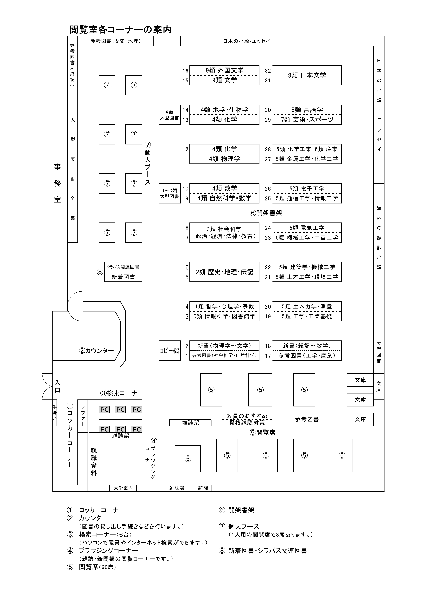

📚 分類から探す
0類・1類 (情報・哲学)
0類 情報科学・図書館学
1類 哲学・心理学・宗教
2類・3類 (歴史・社会)
2類 歴史・地理・伝記
3類 社会科学 (政治・経済等)
4類 自然科学・数学
4類 数学・自然科学
4類 物理学
4類 化学
4類 地学・生物学
5類 工学・工業
5類 工学・工業基礎
5類 土木力学・測量
5類 土木工学・環境工学
5類 建築学・機械工学
5類 機械工学・宇宙工学
5類 電気工学
5類 通信工学・情報工学
5類 電子工学
5類 金属工学・化学工学
5類 化学工業
6類・7類・8類 (産業・芸術・語学)
6類 産業
7類 芸術・スポーツ
8類 言語学
9類 文学
9類 日本文学
9類 外国文学
9類 文学全般
特設コーナー・参考図書
シラバス関連・新着図書
教員おすすめ・資格試験対策
就職資料
新書 (物理学〜文学)
参考図書 (社会科学・自然科学)
新書 (総記〜数学)
参考図書 (工学・産業)
参考図書 (歴史・地理)
参考図書 (総記)